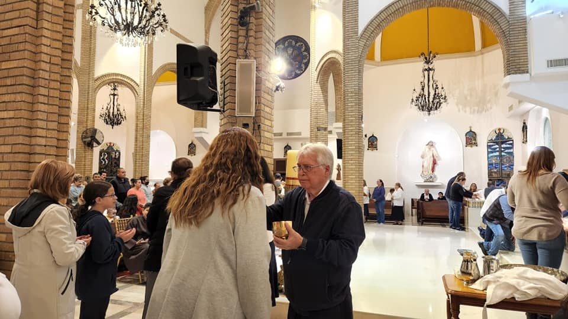
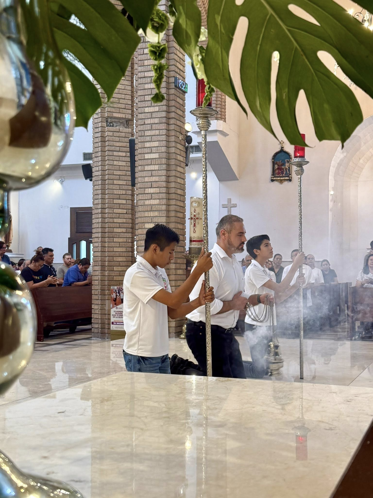
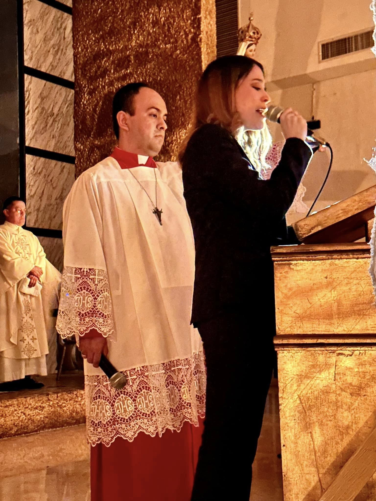
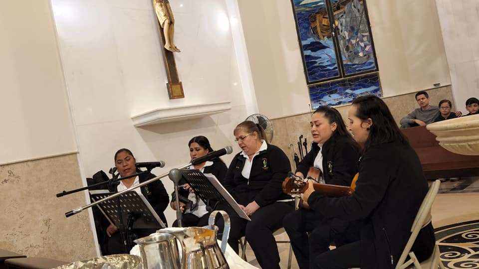
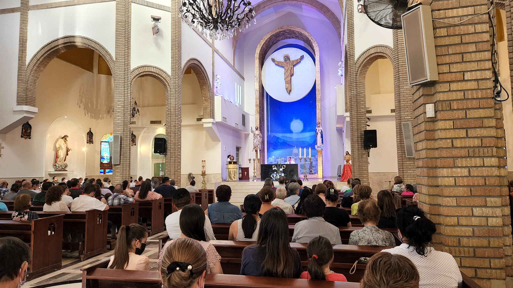
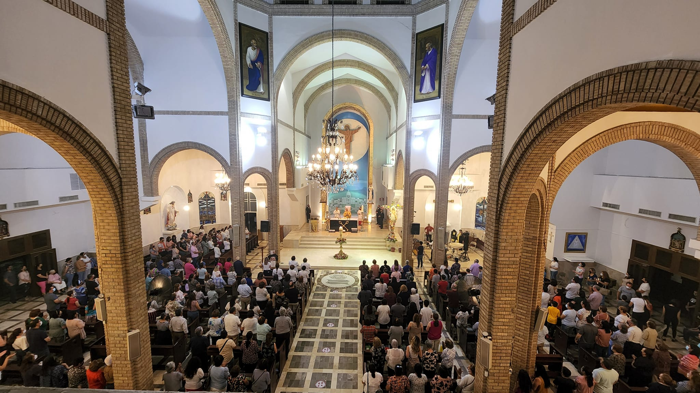

La Unción en Betania
Este día marca una transición deliberada. La Iglesia llama a "reducir la marcha" hacia la intimidad y la sobriedad premonitoria, meditando el contraste entre la entrega incondicional de María al ungir a Jesús y la avaricia de Judas que sella su traición.
Parroquia San Pedro (Allende)
Matutina: 8:00 AM
Vespertina: 7:00 PM
Misas breves enfocadas en la austeridad.
Sin celebraciones programadas hoy en Capilla San Judas Tadeo.
Selecciona tu área para ver tareas detalladas y registro.

Asistencia en la distribución de la Sagrada Comunión.

Servicio al altar, manejo del incensario y cruz alta.

Proclamación de la Palabra.

Soporte musical de la asamblea.

Acogida de los fieles.

Preparación de vasos sagrados, lienzos, vestimentas e insumos (hostias, vino, incienso, cirios).